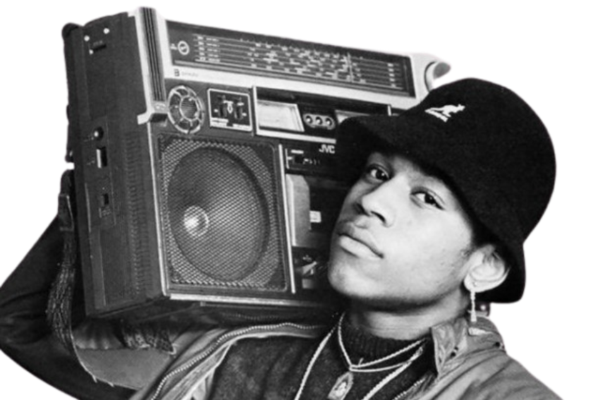
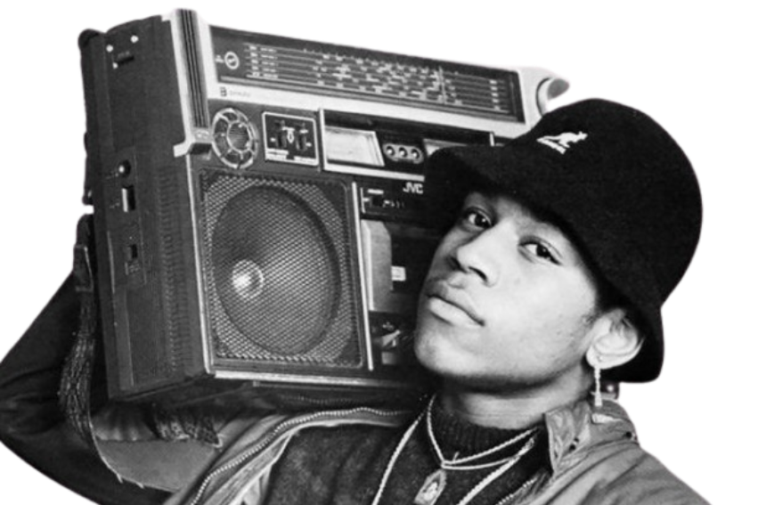

The story goes that on August 11, 1973 DJ Kool Herc, a building resident, was entertaining at his sister’s back-to-school party, and tried something new on the turntable: he extended an instrumental beat (breaking or scratching) to let people dance longer (break dancing) and began MC’ing (rapping) during the extended breakdancing.
Early rap emerged in the 1970s, with pioneers like DJ Kool Herc, who introduced the concept of breakbeats, and Grandmaster Flash, a DJ who perfected techniques like back-spinning and cutting. His group, Grandmaster Flash and the Furious Five, made history with the socially conscious track "The Message". Melle Mel, the group's lead rapper, helped establish rap as a platform for addressing urban life and social issues. In 1979, The Sugarhill Gang brought rap to mainstream audiences with "Rapper's Delight", marking one of the genre’s first commercial successes. Run-D.M.C. revolutionized rap in the mid-1980s, blending hip-hop with rock, especially through their collaboration with Aerosmith on "Walk This Way". Kool Moe Dee and Afrika Bambaataa were also key figures, with the latter pioneering the fusion of electro-funk and hip-hop. Other influential early rappers included LL Cool J, who made waves with his debut album Radio, and Biz Markie, known for his playful style and the hit "Just a Friend". Collectively, these artists laid the foundation for rap to become a dominant force in music and culture.


People listen to rap for a variety of reasons, but one of the main draws is its ability to tell powerful, relatable stories. Rap is a form of self-expression that often explores themes of struggle, success, identity, social issues, and personal experience. The genre has a unique way of conveying emotion through rhythmic wordplay, clever punchlines, and a deep connection to cultural and societal narratives. For many, rap is a means of empowerment—it gives a voice to marginalized communities and sheds light on stories that might otherwise go unheard. Beyond the lyrical depth, rap’s infectious beats and energetic rhythms create a vibrant atmosphere that makes it a go-to for both introspection and celebration. People also appreciate rap’s innovation and the skill involved in creating intricate flows and complex rhyme schemes. With its evolving style, rap remains a dynamic genre that continuously pushes boundaries, making it relevant to new generations and diverse audiences. Whether for the poetic quality of the lyrics, the energy of the music, or the cultural significance, rap offers something that resonates with listeners on many levels.
 
